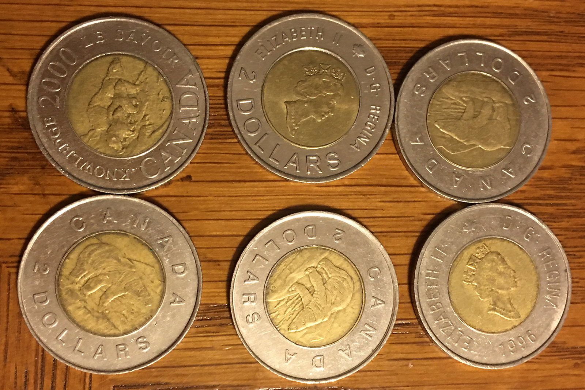
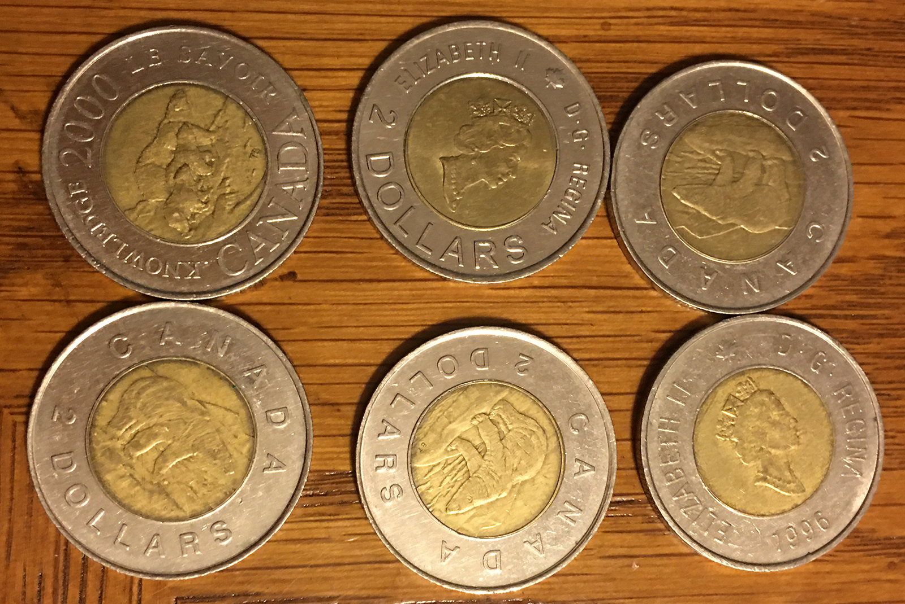

Special Money
We'll be looking at some coins and bills that aren't specialized to one specific country of origin. There's many different types of ways coins can be made that are interesting to have in your collection. Some coins feature multiple metals that give the coins a certain look as if it's stuck inside a ring of metal. There's also special coins that aren't made for circulation and are meant specifically for collectors.
 

After the success Statehood Quarter program and America the Beautiful Quarter program, it appears the US Mint has expanded the range dollar coins they mint by adding the American Innovation Dollar coin. Each coin displays a unique and significant advancement for world civilization. Some examples are Polio vaccine, lightbulb, telephones and Hubble Space telescope. The coins were started in 2018 and are expected to continue through 2032.